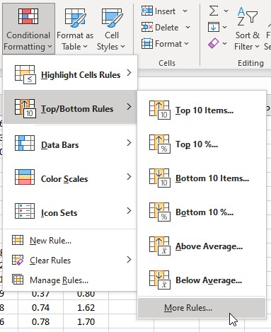
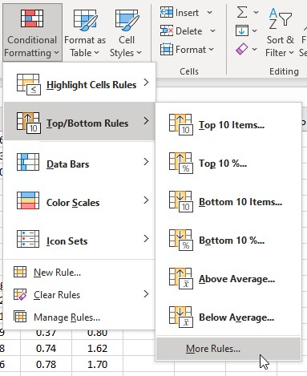

Using likelihood
Likelihoods are used in a wide range of applications in biology. A major application of likelihood is in estimation - for example, we can use likelihood to fit a curve to data instead of using least squares, which we used last week. Another reason to use likelihood is that it is possible to compare different completing hypotheses that explain a data set against one another.
Likelihoods are conceptually different from probabilities, but it is possible to use likelihoods and probabilities interchangeably in some cases. The distinction between likelihoods and probabilities is that with a probability we act as though population-level information is known, and from it we calculate the probability that particular events will occur (such as getting a collection of data like one we have in hand). In contrast, when we calculate a likelihood we treat the data we have in hand as known, and calculate the likelihood of possible population parameters given the data. With likelihood, the emphasis is directly on comparisons among competing hypotheses, which is exactly what we want to do in scientific work.
To start, we will be working with DNA fingerprints today. The first question we'll ask is, how confident are we that a crime scene blood sample belongs to a particular suspect when the suspect's DNA and the crime scene evidence match at 13 different genetic markers? The way we will use likelihoods in this example could easily be treated as a probability calculation - we would do exactly the same calculation if we wanted to know the probability of selecting a person by chance that matched all 13 markers as we will do today to calculate the likelihood of a match on all 13 markers given that the suspect is not the source of the blood. The second example we will use is to calculate the likelihood that a blood sample belonged to a person from one of several possible populations that have different frequencies for the 13 genetic markers. This second application is more clearly different from a probability calculation, and more clearly puts the emphasis on comparing competing hypotheses, given some observed data.
Matching DNA Fingerprints to Crime
Scene Evidence
 We are told that, unless we
have an identical twin, we are genetically unique, and that the
particular sequence of DNA that we carry in our genome is
different from every other person in the world. There is, of
course, nobody monitoring our genes to make sure that there are no
duplicates, and a more correct statement would be that the chance
that two people will be identical across the 3.2 billion bases
that make up their genomes is so small that we don't expect to
ever see two genetically identical people who are not identical
twins. We are told that, unless we
have an identical twin, we are genetically unique, and that the
particular sequence of DNA that we carry in our genome is
different from every other person in the world. There is, of
course, nobody monitoring our genes to make sure that there are no
duplicates, and a more correct statement would be that the chance
that two people will be identical across the 3.2 billion bases
that make up their genomes is so small that we don't expect to
ever see two genetically identical people who are not identical
twins. Given that we expect some genetic differences between any two people we encounter, we can use genotypes across different genetic "loci" (which are just identifiable regions of our DNA). Different variants of the same genetic locus are called "alleles" of the locus. The particular collection of alleles you carry has an infinitesimally small chance of occurring by chance in another person, and we are fairly safe in asserting that it is statistically extremely unlikely that any two people are the same - thus, everyone is unique. This is certainly true at the genome level, but what about at a smaller scale, such as a set of 13 gene loci? We have not yet reached the point where an entire genome can be sequenced quickly and cheaply enough to use all of the DNA in a sample to identify individuals. Instead, we use "DNA fingerprints", which are a person's genotype at 13 gene loci distributed among 12 of our 22 autosomes. These 13 loci are called "STR loci", which stands for "short tandem repeats"; this refers to the tendency for non-coding regions of our DNA (the "junk" DNA we all carry) to have repeating sequences of base pairs adjacent to one another. These non-coding, non-functional sequences are useful for individual identification, because they tend to be highly "polymorphic", meaning there are lots of different alleles in the population. With many possible alleles, the particular combination of alleles found at multiple gene loci becomes very unlikely to be repeated by chance, and thus the particular combination becomes a useful unique identifier for an individual, just like a traditional fingerprint. |
The names of the gene loci and their locations on the chromosomes are shown in the figure above. It's important that the loci are mostly on different chromosomes, because that ensures that they will assort independently, and thus (for example) the probability that a person will receive a particular allele at the TPOX locus is not affected by their receiving a different allele at the TH01 locus. In the one case in which two STR loci are found on the same chromosome (D5S818 and CSF1PO) they are sufficiently far apart that crossing over makes them independent of one another as well.
Consider a typical case in which a spot of blood is found at a crime scene that didn't belong to the victim. A suspect is apprehended, and his DNA fingerprint is obtained, and found to match the DNA fingerprint from the spot of blood - in other words, the alleles carried by the suspect are all the same as the alleles found in the spot of blood at the crime scene. He says he's innocent, and he wasn't even there - the blood must belong to somebody else. To evaluate his claim, we need to know the likelihood of obtaining a match if he is the source of that blood drop. We can then calculate the likelihood of a match if he wasn't the source of the blood, and then compare the two likelihoods by dividing one by the other. We can then use the ratio of the likelihoods to gauge how much more likely it is that he's the source of the blood than that he isn't.
If the suspect is the source of the blood, then assuming no errors at the lab then we are certain to have a match. This means that the probability of a match if he's the source of the blood is 1 for each locus, and the likelihood for the entire fingerprint is just the product of all the probabilities for each locus, which will also be 1.
The more difficult part is to calculate the likelihood of a match if he is not the source of the blood, which we will do now.
Step 1. Download this file, save it to your H drive, and open it.
You'll see that in sheet "DNA" you have a set of CODIS STR loci for a single person, and the alleles found at each locus. The numbers in columns "Allele 1" and "Allele 2" are just labels, they are not meant to be numeric data (so, for example, at locus D3S1358 this individual has allele #15 and allele #16).
The columns "p" and "q" give the frequencies of these alleles, which vary among different populations, and among different ethnic groups. Since the suspect we have in hand is a white male, these frequencies come from Table 2 of this paper. You can think of these allele frequencies as being probabilities of drawing the allele at random from the population.
Step 2. Calculate the genotype frequencies.
During fertilization, the alleles contributed by mother and father combine to give the offspring his or her genotype. Since these are non-coding loci, meaning that they don't produce any gene products that have an observable phenotype, we don't expect the genotypes to be usable by people in choosing a mate - consequently, the genes should combine at random with one another. When this is true, we would expect to have combinations occurring like so:
| Mom |
|||
|---|---|---|---|
| p | q | ||
| Dad |
p |
p2 |
pq |
| q |
pq |
q2 |
|
In other words, homozygotes for the p allele would occur at a frequency of p2, homozygotes for the q allele would occur at a frequency of q2, and heterozygotes would occur at a frequency of 2pq.
Given this, you can calculate the genotype frequencies. If the two alleles are the same, so that the person is homozygous for that gene, then multiplying the numbers in p and q is the same as squaring the gene frequency. For heterozygotes, use twice the product of the p and q columns (the frequencies will be different for heterozygotes).
The formula we should use, then, is different for homozygotes and heterozygotes. We would like to be able to write a single formula for the calculation and then copy and paste it for each of the 13 loci, but some of the loci are homozygous and some are heterozygous. To solve this, we need to test for whether the locus is homozygous, and if it is we multiply the to frequencies together (since they are homozygous they will be the same frequency, and this will be equivalent to squaring the frequency). If they are heterozygous, we need to multiply the frequencies of the two different alleles together, and then multiply by 2. We can use the "if()" function to accomplish this, like so:
if(condition, value if condition is true, value if condition if false)
We are going to multiply the value in column D by the value in column E for each locus, but if the alleles are not the same (heterozygous) we will will also multiply by 2. So, the if() function should be:
=if(b2=c2, d2*e2, 2*d2*e2)
This tests whether the allele numbers are the same, and if they are then d2 is multiplied by e2. If they are different then d2*e2 is multiplied by 2. Now that you have the first one done you can copy and paste to calculate the rest of the loci.
You can think of these genotype frequencies as being the probability of selecting an innocent person from the population who matches the blood sample at both alleles at a single locus.
Step 3. Calculate the likelihood of the entire fingerprint if the suspect is not the source of the blood.
To calculate the likelihood of the entire set, we need only to multiply the likelihoods of each genotype. In cell F16 multiply the likelihoods together (this can be done with the "product()" function).
Step 4. Calculate the ratio of likelihoods.
You now have a likelihood of a match if the guy is the source of the blood, and one if he's not. The ratio of the two would just be (likelihood of a match if he's the source of the blood) / (likelihood of a match if he's not the source). Calculate this in F18.
This ratio tells you how many times more likely it is that this person is the source of the blood than that he is not the source of the blood. You can think of this as being equivalent to the number of people you would need to select before you would randomly match this DNA fingerprint by chance (there are currently about 7 billion people on the planet, which is 7 x 109).
Assignment testing
If you watched the PBS show, "Faces of America", you were treated to a demonstration of use of DNA to infer a person's ancestry. The show invited celebrities to give DNA samples, which were then sequenced for genes that are known to be highly variable among populations from various regions of the world. With this information, they were able to identify where the alleles the celebrity carried were most likely to have come from, and then by counting up how many alleles came from each possible location, they could give an estimate of the percentage of their DNA that came from each location.
We can use a similar approach to assign our DNA fingerprint to a population. To do this, we need to have data from more than one population. We can then calculate likelihoods of coming from each population, given the DNA fingerprint of the person, and the population with the highest likelihood is the most likely to be the population from which the person came. Note that for convenience we will be using the same STR data we used for DNA fingerprinting, but these are not necessarily the best loci to use for inferring ancestry. However, this exercise will give you an idea of how the analysis is done.
1. Look over the worksheet.
Switch to sheet "WhichPopulation", and you'll see the same DNA fingerprint as before, but transposed so that the gene loci are column labels instead of rows. This was done only to make it easier to calculate likelihoods for several different populations in the rows below (it's easer to scroll through rows than columns). If you scroll down you'll see the gene frequencies derived from several different populations. The frequencies are taken from the same paper as before. We will continue to assume that we know that the person is white, so we can continue to use only the data in Table 2 - this cuts down on the number of different populations we need to consider, but we could include data from all of the ethnic groups presented in the paper if we didn't want to assume anything about the person's ethnicity. Note that we've dropped gene D16S539 because the paper does not include samples from New York, Minnesota, or Canada for this locus, and we need data for all the populations for every locus used.
2. Calculate genotype frequencies for each population.
You should be able to construct a cell formula that can be copied and pasted to all the needed cells (use an "if()" function to account for differences in homozygotes and heterozygotes, and be sure to always point to the alleles in rows 4 and 5 - use dollar signs as needed to prevent the rows from changing as you copy and paste).
3. Calculate the likelihoods of the populations given the DNA fingerprint.
In the cells below the "Likelihood" labels (O15 for California) calculate the likelihoods for the entire fingerprint for each population.
4. Enter the likelihoods in cells B87 through B94, by using a formula that points to each one in the cell where it was calculated (for example, for California in B87 the likelihood is =O15).
5. Calculate the likelihood ratios. To the right of the Likelihood column is blank matrix in which you will calculate all the likelihood ratios for each pair of states. The column headings indicate the state that should be in the numerator, and the rows are labeled in A87 through A94 with the state that will be in the denominator. You should be able to write a formula in cell C87 that will always use California's likelihood in the numerator, and will use the likelihood for the state in the same row as the formula as the denominator, which can then be copied and pasted to each row in that column. Do this for each column to get the likelihood ratios.
When you're done calculating the likelihood ratios, delete the 1's along the main diagonal - these are all dividing a state's likelihood by itself, and are not comparisons between states.
6. Identify the maximum likelihood ratio.
In cells B87 through B94 are the likelihoods for each population. The matrix to the right, in cells C87 to J94 has the ratios of these likelihoods (the cells were already set up, and as you calculated likelihoods for each population they automatically filled in).
We are going to find the maximum likelihood in cells B87 through B94 using "conditional formatting".
- Select the cells B87 through B94
- Click on "Conditional Formatting
 " in the "Home"
tab, and select "Top/Bottom Rules", then " More
rules...".
" in the "Home"
tab, and select "Top/Bottom Rules", then " More
rules...".
- In the "New Formatting Rule" window, find the "Edit the Rule Description" area, and set the number to 1 so that only the highest value will be formatted differently.
- Then, click on "Format...", and change the format to bold italics. This will set the format of the largest likelihood ratio to a bold italic, which makes it easy to identify.
{kind=link}
Now, let's use the same trick to find the biggest likelihood ratio.
- Select cells C87 to J94, and get to the same formatting rule editor as you did for the maximum likelihood.
- Set the rule to find the top 1 value, and change its format to bold italic with red text.
Once you are done, you'll see the state that this person is most likely to have come from is still only 3.22 times more likely than the state he is least likely to have come from. We should probably not be terribly confident about assigning this fingerprint to a particular state, given how low the ratios are. When methods like this are used to trace ancestry the populations used are usually more discrete, and the allele frequencies are usually more different from one another than these.
Fitting a curve with maximum likelihood
The next application of likelihood is to use it as a method of fitting functions to data. This is what we did last week using least squares as our method. This week we will fit the Pnet curve to light intensity using maximum likelihood instead. For this approach, we will use the same function as last time, but instead of minimizing the squared differences between observed and predicted values, we will maximize the likelihood of phi, Pmarea, and theta given the data.
Step 1. Calculate residuals.
On worksheet CurveFit I have already predicted the net photosynthesis using the formula we used last week. The least squares estimates we came up with last week are currently being used, and copies of these are recorded in cells A23 through B25 for reference.
The predicted values of Pnet are coming from the "ML Estimates" section, cells B16 through 18. We will use Solver to change these until the likelihood maximizes. So, we need to calculate the likelihood.
As a first step, calculate the residuals. In cell D1 type "Residuals", and in D2 type =b2-c2. Copy and paste this to the rest of the predicted Pnets.
Step 2. Calculate likelihoods for each data point.
In cell e1 type "LogLikelihood". To calculate the likelihood, we will assume the residuals are normally distributed. Since the residuals are differences from means, we will use 0 as the mean for the residuals. We'll then calculate the probability of the residual, with predicted Pnet as the mean, and the "s of resid" in cell B19 as the standard deviation.
In cell e2 type =normdist(d2, 0, b$19, 0). The structure is: normdist(value, mean, std. deviation, cumulative), where the value we're calculating the probability for is the residual, the mean is set to 0, the standard deviation is to be estimated (currently set to 0.1, and in cell B19), and "cumulative" indicates whether we want the probability from negative infinity up to the value (cumulative set to 1) or just the probability of the value itself (cumulative set to 0, which is what we want).
This gives us the likelihood, but we would like to work with log-likelihoods. So, modify the formula in E2 to be =ln(normdist(d2,0,b$19,0)). This takes the natural log of the normal probability. Copy and paste this to the rest of the cells.
Step 3. Calculate the likelihood of the entire data set.
Now, sum the log likelihoods you just calculated in E2 to E9 in cell E12.
Step 4. Use Solver to find the ML estimates.
Start Solver, and set it to maximize the log-likelihood in cell E12 by changing the parameters in B16-B18, and the standard deviation of the residuals in cell B19.
In a cell below the graph, mention any difference in the ML and least squares estimates (or tell me they are identical if you don't get any differences).
Assignment
That's it! Upload your completed worksheet to the class web site.